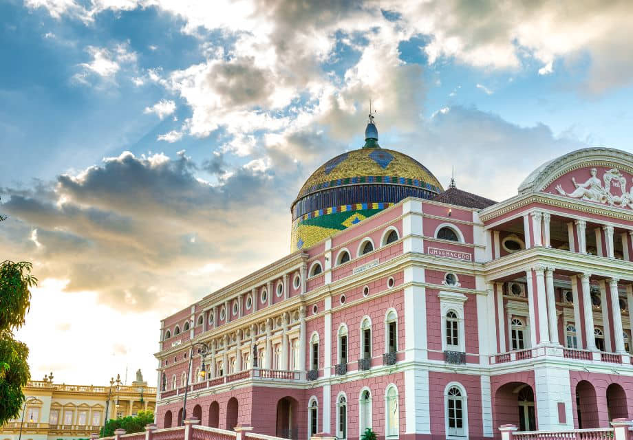
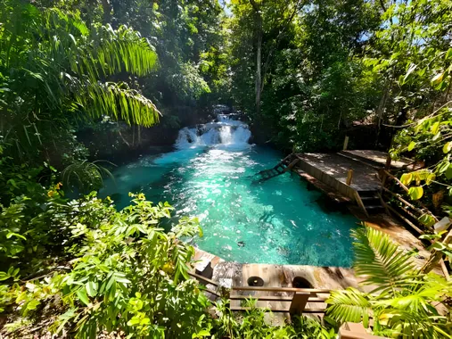
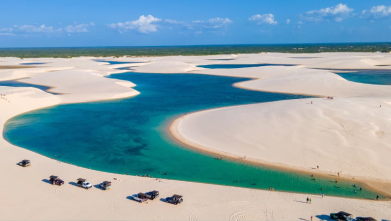

A Estátua do Cristo Redentor não é apenas uma obra de arte monumental; é um testemunho da fé e da cultura brasileira. Erguida no topo do Morro do Corcovado, a 710 metros acima do nível do mar, esta estátua art déco de 38 metros de altura tem sido um símbolo de paz e acolhimento desde sua inauguração em 1931.

Manaus, Amazonas
Teatro Amazonas
O edifício renascentista, que hoje é tombado como Patrimônio Histórico pelo IPHAN, foi construído em 1896 para atender a uma exigência da época: ser um lugar onde companhias de espetáculos estrangeiras pudessem se apresentar para a elite local.

Tocantins
Jalapão
O Jalapão oferece as mais diversas paisagens naturais, entre elas fervedouros de águas cristalinas, cachoeiras e dunas. É um destino lindo e muito diferente, ideal para fugir dos grandes centros urbanos e relaxar dentre as belezas do cerrado.
Pernambuco
<1>Fernando de Noronha
Com praias deslumbrantes e um atmosfera tranquila, é o tipo de lugar que você pode ir várias e várias vezes e sempre se impressionará com sua beleza. A natureza bem preservada, fora e dentro da água e a sensação de estar sempre seguro são qualidades que fazem os visitantes se apaixonarem por Fernando de Noronha.

Maranhão
Lençóis Maranhenses
As dunas de areia e lagoas com águas cristalinas formadas pelas chuvas nos Lençóis Maranhenses tornam o lugar tão belo que já foi várias vezes cenário de filmes. A região dos Lençóis oferece uma paisagem realmente única e surpreendente!